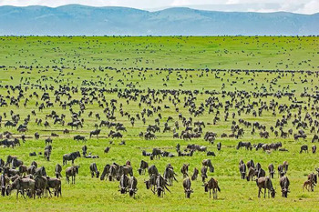
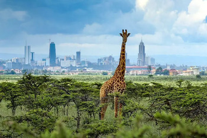

Discover amazing destinations with Socotra Tours and Travel. Plan your dream vacation with us!
<
Explore Amazing Places
Discover Our Hidden Gems
Choose your next adventure with us and get a heavenly experience courtesy of Socotra Tours and
Travel
Ruins of Kilwa Kisiwani, Tanzania
Kilwa Kisiwani is a remarkable travel destination, recognized
as a UNESCO World Heritage Site, renowned for its exceptionally preserved Swahili ruins.
Situated along the East African coast, this site offers a captivating glimpse into the historical and archaeological significance of the region. The ruins of Kilwa Kisiwani provide a fascinating window into the vibrant Swahili culture that flourished here in the past.
Zanzibar, Tanzania
Zanzibar is an enchanting archipelago located off the coast of Tanzania,
renowned for its breathtaking beaches, captivating historic Stone Town, and vibrant cultural experiences.
This tropical paradise offers a unique blend of natural beauty, rich history, and diverse cultural influences.

Serengeti National Park, Tanzania
Serengeti National Park is a world-renowned destination
celebrated for its awe-inspiring annual migration of wildebeest and zebras.
This vast savannah landscape in Tanzania offers an extraordinary opportunity
to witness one of nature's most remarkable spectacles.
Bwindi Impenetrable Forest, Uganda
Home to mountain gorillas, Bwindi offers a unique gorilla trekking experience. Explore the lush
rainforest and encounter these magnificent creatures.
Amboseli National Park, Kenya
Amboseli is known for its stunning views of Mount Kilimanjaro and large herds of elephants. Experience the
beauty of the African savannah.
Mombasa, Kenya
Mombasa is a coastal city with a rich history, beautiful architecture, and vibrant markets. Explore historic
sites and relax on the picturesque beaches.
Virunga National Park, Rwanda
Virunga is home to the endangered mountain gorillas. Trek through the volcanic landscape and witness
incredible biodiversity.
Murchison Falls National Park, Uganda
Murchison Falls offers spectacular waterfalls, wildlife safaris, and boat cruises along the Nile River. Explore
the beauty of Uganda's largest national park.
Lamu Island, Kenya
Lamu is a UNESCO World Heritage Site known for its well-preserved Swahili architecture and rich cultural
heritage. Explore narrow streets, historic buildings, and pristine beaches.
Ngorongoro Crater, Tanzania
Ngorongoro Crater is a unique conservation area with a high concentration of wildlife. Experience game drives
amidst the stunning crater landscape.
Samburu National Reserve, Kenya
Samburu offers a unique safari experience with diverse wildlife, including rare species such as the Grevy's
zebra and reticulated giraffe.
Kidepo Valley National Park, Uganda
Kidepo Valley is known for its rugged landscapes and abundant wildlife. Experience the remote beauty of this
less-explored national park.
Selous Game Reserve, Tanzania
Selous is Africa's largest game reserve, offering boat safaris, walking safaris, and traditional game drives in a
pristine wilderness setting.
Rift Valley, Kenya
The Great Rift Valley in Kenya offers stunning landscapes, including lakes, escarpments, and wildlife. Explore
geological wonders and cultural attractions.
Mahale Mountains National Park, Tanzania
Mahale Mountains is known for its chimpanzee trekking and pristine landscapes along the shores of Lake Tanganyika.
Experience the beauty of this remote park.

Nairobi National Park, Kenya
Nairobi National Park is unique for its proximity to the city. Experience a safari backdrop with views of
Nairobi's skyline.
Mafia Island, Tanzania
Mafia Island is a paradise for marine enthusiasts. Explore coral reefs, go diving, and relax on pristine beaches
in this tropical haven.
Tsavo National Park, Kenya
Tsavo National Park is one of Kenya's largest and oldest parks, known for its diverse landscapes, wildlife, and the
iconic red elephants. Explore the vast wilderness of Tsavo.
Arusha National Park, Tanzania
Arusha National Park is a jewel nestled at the base of Mount Meru. Experience lush forests, diverse wildlife, and
breathtaking views of Mount Kilimanjaro.
Kakamega Forest Reserve, Kenya
Kakamega Forest is a tropical rainforest in western Kenya, home to diverse bird species, primates, and unique
flora. Embark on a nature-filled adventure.
Lake Bunyonyi, Uganda
Lake Bunyonyi is a stunning crater lake surrounded by green hills. Discover the tranquility of this picturesque
destination and engage in water activities.
Maasai Mara, Kenya
Maasai Mara is a wildlife reserve in southwestern Kenya, adjacent to Tanzania. It is famous for its
exceptional population of lions, leopards, and cheetahs visit Maasai Mara Enchada Camp for the most memorable lion safari tour courtesy of socotra tours and travel.